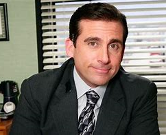
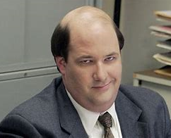
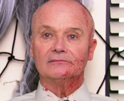

Les presentamos, nuestro top 5 de personajes
Es sólo una apreciación personal, ojalá termines sin mucho esfuerzo THAT'S WHAT SHE SAID
Michael Scott
Steve Carell interpreta a Michael Scott desde la primera temporada hasta la séptima. Scott es, en su mayor parte, Gerente Regional de Scranton, Pensilvania, rama de la empresa de papelería Dunder Mifflin. Él es en gran parte un empleado incompetente, inepto y distrae a sus subordinados.
Dwight Schrute

Es pueril, egoísta, engreído y narcisista y tiene una visión de sí mismo que poco o nada se corresponde con la realidad. Por momentos se hace odioso, pero lo que tiene de repulsivo también lo tiene de adorable.
Kevin Malone
Interpretado por el brillante Brian Baumgartner, Kevin, a diferencia de sus colegas, no tiene grandes intereses amorosos, debido a que es algo solitario y toda su vida está relacionada al trabajo... lo que es una decepción porque tampoco es bueno en lo que hace.
Kelly Kapoor
Kelly Rajanigandha Kapoor es un personaje ficticio de la serie de televisión estadounidense The Office, interpretada por Mindy Kaling. Ella es la representante de servicio al cliente en la sucursal de Scranton de Dunder Mifflin de las temporadas 1 a 8.
Ryan Howard
Misteriosa y errática. Ryan tiene una vida interior preocupante, pero revela poco de sí mismo. Dos caras es un eufemismo con él. No tiene miedo de usar cualquier excusa disponible, o incluso inventar alguna sin vergüenza. Una vez se disculpó con Kelly de esta manera: “Quería decir que lo siento de Ryan Howard por tratarte mal los últimos dos años. Tenía veintitantos años y estaba pasando por muchas cosas. Creo que nunca procesé por completo el 11 de septiembre”
Creed Bratton
Enigmática. Creed claramente ha vivido una vida larga y plena, incluso si apenas puede recordar nada de eso. Todavía no sabe muchos de los nombres de sus compañeros de trabajo. La mayoría de las cosas que dice son tan extrañas que solo profundizan el misterio. A pesar de todo esto, es razonablemente querido, o al menos tolerado, principalmente porque es inofensivo.